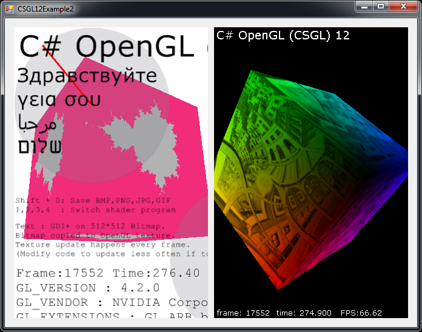

C# OpenGL 인터페이스
운영 체제를 Windows
Colin Fahey

CSGL12Control a Form에, 프랙탈 "픽셀 쉐이더" 프로그램을 보여주는 그림과 텍스쳐로 복사 GDI+

a Form에 두 CSGL12Control 인스턴스, 픽셀 쉐이더 프로그램과 질감을 보여주는

의 3D 아바타가 배회 바탕 화면의 커서를 이동할 수있습니다
1. 소프트웨어
이 문서의 "CSGL12"이 버전은 소프트웨어와 함께 포함되어야합니다. 면, 다음의 소프트웨어를 찾을 수없습니다 다음 웹 사이트에 소프트웨어를 다운로드 :
http://colinfahey.com 이동하시기 바랍니다.
2. 모든 C# OpenGL 인터페이스 (CSGL12)에서 C# 컴퓨터 코드의 "공개 도메인에있다"
내가 C# OpenGL 인터페이스 (CSGL12) 내의 모든 C# 컴퓨터 코드를 썼습니다.
내가 C# OpenGL 인터페이스 (CSGL12) 공개 도메인에있을 C# 모든 "컴퓨터의 코드를 선언합니다."
따라서, 컴퓨터 코드는 어떤 목적을 위해 사용될 수있습니다 (상용 또는 개인), 지불하지 않고, 제한없이, 의무없이, 그리고 원래의 작성자를 인정하지 않고있다.
이 코드를 수정할 수있습니다 또는 일부 재사용, 제한없이, 그리고 의무를하지 않고, 원래 작성자를 인정하지 않고있다.
이 예제 프로그램을 포함 소량의 컴퓨터에 코드 (구체적으로, "컴퓨터에 코드를 shader) 작성한 다른 사람들이합니다." 이러한 코드는 그 자체가 아니므로 trivially 인터페이스 내에 제거할 수있습니다. 이러한 코드를 생성하고 사용 shader 단순히 프로그램의 인터페이스를 사용하여 단순하게 "입증하는" 것입니다.
3. 소개
"CSGL12" C# 컴퓨터 코드 파일의 OpenGL은 그래픽 라이브러리에있는 인터페이스를 구현하는 컬렉션 (2007 년 최대 OpenGL의 모든 확장 기능) Windows 운영 체제를 포함합니다.
the "CSGL12" 컬렉션에서 C# 컴퓨터 코드 파일을 쉽게 "Form" "System.Windows.Forms.Form" (인스턴스)와 C# / .NET 소프트웨어에 그림을 추가할 수 있도록 그것을 OpenGL.
컴퓨터 코드 파일의 컬렉션 "CSGL12" 파일 "CSGL12Control.cs"는 클래스 "CSGL12Control", "System.Windows.Forms.Control"에서 파생된 이름을 정의하고 이름을 포함합니다. "CSGL12Control"의 각 인스턴스는 독립 OpenGL 그리기 영역을 나타냅니다. 그것은 매우 Form System.Windows.Forms.Form (인스턴스) CSGL12Control의 여러 인스턴스를 쉽게 추가할 수있다.
4. 특성 및 "CSGL12"의 요구 사항
이 코드는 오직 그 .NET 2.0 Framework (Windows 2000, Windows XP, Windows Vista, Windows 7) 지원 운영 체제에 대한 Windows입니다
이 코드 (무료 컴파일러) "Microsoft Visual C# 2008 Express Edition"를 사용하여, 또는 그와 유사한 C# 컴파일러를 컴파일 할 수있습니다.
이 코드는 "[X] Allow unsafe code" 그 이미지 데이터를 복사하는 기능을 사용할 수있는 최적의 옵션을 선택한 빌드가 건설되고있는이 필요합니다. 만약 당신이 쉽게 그 "unsafe" 옵션과 그들이 원하는 요구하거나 필요한 경우 해제 C# 코드의 일부를 확인할 수있을 것이다 C# 전문 프로그래머가없습니다. 이미지 데이터를 복사하는 코드는 대안보다 10 배 빠른 "unsafe", 그리고이 왜 이런 코드가 사용됩니다를 사용하고있습니다. 만약 당신이 DLL 모든 "unsafe"의 코드가 포함되어 있으면 다음 프로젝트에 사용하는 DLL the "unsafe" 옵션으로 건설되고, 그리고 당신을 유추할 수 있도록 구축을 필요로하지 않는 어떤 특별한 것을 의미하지는 않는 프로젝트에 "unsafe" 옵션의 부재 안전 (왜냐하면 수많은 DLL 파일은 암시적으로 또는 명시적으로 프로그램에 의해 안전하지 않은 코드를 "포함)이 사용됩니다."
이 코드를 컴파일하여 사용할 수있는 다음과 같은 :
Microsoft Visual C# 2008 Express Edition
Microsoft Visual Studio 2008
Microsoft .NET 3.5 SDK
SharpDevelop
Mono Project
이 코드는 (대부분의 OpenGL 확장을 통해 제공하는 1 년 2007), "vertex shaders" 및 "pixel shaders" 등.
이 코드는 1570 관련 기능 OpenGL을 제공합니다 :
336 GL functions
51 GLU functions
19 WGL functions
1164 extensions
이 코드는 서로 다른 매개 변수 형식과 유사 1570 기능의 몇몇 대안을 제공, 편의를 위해.
이 코드 OpenGL에 대한보다 3244 상수를 정의합니다.
이 코드는 여러 OpenGL 그리기 컨텍스트가 가능하게, 모든 애니메이션 독립적, 어떤 "Form".
a "CSGL12Control"을 클릭하면, "수 있도록 초점을" 후속 "입력" 키보드와 마우스 휠을 입력. 운동을 할 때 커서를 클릭하고 커서를 "CSGL12Control"의 인스턴스의 직사각형 영역 내에 접수합니다.
이 코드를 어떻게 C# 및 .NET에서 작업을 할 수있는 몇 가지 일반적인 OpenGL 입증하는 기능이 포함됩니다.
이 코드는 알파벳 순서로 "class GL"에 "GL.cs"에서 쉽게 상수 또는 함수가 누락되는 경우 (가능성, 확장 2007 후 올해 채택 결정을 제외하고) 모든 OpenGL 상수와 기능을 나열합니다.
이 예제 프로그램 Bitmap를 그리는 방법을 GDI+ 할, 그리고 복사하는 방법을 보여 Bitmap an OpenGL 텍스처.
이렇게하면 텍스트 및 기타 OpenGL 현장에 기여할 능력을 그리기 GDI+합니다.
업데이트 및 업로드할 수있습니다 GDI+ Bitmap the OpenGL의 텍스처를 OpenGL 한 번씩 같은 빈도로 프레임합니다.
예제 프로그램은 프로그램이 실행되는 여러 가지 방법 중에서 하나를 선택 "pixel shader programs"를 보여 줘야합니다.
예제 프로그램은 어떻게 이미지 파일 (JPG, BMP, GIF, PNG) OpenGL 버퍼 쓰기를 보여 줘야합니다.
보도 Shift + 0 (교대 - 영) 이미지 파일에 OpenGL 버퍼를 작성합니다.
이 예제 코드에 DLL 어떻게 파일을, 그리고 그 파일을 다른 프로젝트 DLL, (문맥 - 민감한 코드 완료) 자주와 지속되는 "IntelliSense"과 (예, Microsoft Visual C# 2008 Express Edition 등) Microsoft 코드 편집기에 추가되지 않도록 할 수있습니다 "GL.cs" 컴파일을 보여줍니다 응답 (반복 많은 초, 편집기를 완전히 사용할 수 없게 만들기)을 일시 중지합니다. 하지 않는 한 사람은 편집기의 느려짐 기꺼이 감내하는 파일 "GL.cs" 데 어떤 프로젝트에 직접 포함 Microsoft 코드 편집기에 의해 조장되는 것은 아닙니다. 이 문제와 Microsoft Visual Studio 2003, 2005, 2008, 영향이있다는 아마도 2010 버전에 영향을 미칠 것이다, 너무합니다.
예제 코드는 "Form"에 "CSGL12Control"의 여러 인스턴스의 사용을 보여줍니다.
예제 코드는 Windows의 바탕 화면을 배회 "a 3D" 아바타하게하는 코드를 포함하고있습니다.
5. 예제 프로그램에 포함된 "CSGL12"
5.1 "CSGL12DLL"
이 프로젝트는 생산 "CSGL12DLL"라는 DLL "CSGL12DLL.dll" 포함되어있는 "class GL" (C# 파일 "GL.cs"에서) 정의라는 이름의 파일입니다.
에 DLL 파일을, 그리고 사용 "class GL" 씌우고 그 DLL 다른 프로젝트에서 사용하는 "class GL", IntelliSense 기능을 가진 모든 Microsoft 코드 편집기와 함께 극단적인 문제가 발생하지 않도록 도움을줍니다. 프로젝트 GL.cs에서 C# 직접 파일을 완전히 응답하지 않게 될 수 있고 거의 지속 IntelliSense 기능의 비효율을 (그리고 사실은 그 IntelliSense 분명히 때문에 편집기의 주요 프로그램 스레드 블록을 사용할 수 없게 the IntelliSense 기능을 야기할 것이 어떤 Microsoft 코드 편집기를 사용하여 ).
있다면, 그때는 단순히 프로젝트에 파일을 직접 포함시킬 수있습니다 "GL.cs"가 Microsoft로 (예, "SharpDevelop", "MonoDevelop", 등)을 생산하지 않는 C# 코드 편집기를 사용하는 경우, 당신은 어려울 것이 "CSGL12DLL.dll"를 사용하여 어떤 혜택을 얻을 수있다.
5.2 "CSGL12Control"
이 프로젝트는 생산 "CSGL12Control"라는 DLL "CSGL12Control.dll" 포함되어있는 "class CSGL12Control" (C# 파일 "CSGL12Control.cs"에서) 정의라는 이름의 파일입니다.
에 DLL 파일을, "class CSGL12Control" 씌우고 그 "Control" (즉, 클래스 "System.Windows.Forms.Control"에서 파생된) Microsoft Visual C# 2008 Express Edition의 "Toolbox" (와 비슷한 C# 편집자)이 추가될 수있습니다. the "Toolbox"에서 쉽게 "CSGL12Control"하는 사람 "Designer"에 "Form"를 (예를 들어, 단순히 선택하고 "Toolbox" a "Form"에 이르기까지 "CSGL12Control"의 인스턴스를 드래그) 커서를 사용할 수있는 사람 "CSGL12Control"의 인스턴스를 추가할 수있게 해줍니다.
이 "CSGL12Control" 그리기 개체 OpenGL 컨텍스트를 관리합니다. "CSGL12Control"의 여러 인스턴스 "Form"에있을 수있습니다.
5.3 "CSGL12Example1"
"CSGL12Example1" "CSGL12Example1.exe" 명명된이 프로젝트는 실행 프로그램 파일 (EXE)를 생산했다. 이 프로그램은 CSGL12Control의 인스턴스를 표시하고 사용하는 정육면체 OpenGL 무승부 "CSGL12DLL.dll" 및 "CSGL12Control.dll"를 사용합니다.
이 프로그램은 (, 벽돌, 나무, 프랙탈과 만화) 4 "가지 "pixel shaders"의 사용을 보여줍니다."
이 프로그램은 또한 "GDI+", .NET 그리기 도서관, "Bitmap" 개체의 텍스트와 다른 모양을 잡아 사용을 보여줍니다 ("GDI+" 개체)를 누른 OpenGL에 "texture"로, 따라서 이미지를 그려 그 "Bitmap"에서 이미지 데이터를 복사할 수 있도록 "GDI+"에 의해 OpenGL 그림에 표시합니다. 때문에 OpenGL "GDI+"과 비슷한 그림이 발견 2D libaries 기능은 2D 드로잉의 많은 부족이 기능은 매우 유용합니다.
5.4 "CSGL12Example2"
"CSGL12Example2" "CSGL12Example2.exe" 명명된이 프로젝트는 실행 프로그램 파일 (EXE)를 생산했다. 이 프로그램을 사용하여 각각의 큐브 OpenGL 무 CSGL12Control의 두 인스턴스를 표시 "CSGL12DLL.dll" 및 "CSGL12Control.dll"을 사용합니다.
이 프로그램은 "Form"에 "SplitContainer" "Control"있다. 각 "SplitContainer"의 두 영역의 CSGL12Control의 인스턴스를 포함하고있습니다. 그러므로, 한 사람 CSGL12Control의 두 인스턴스 사이의 분열의 위치를 조정할 수있습니다. 이것은 CSGL12Control의 유연성을 보여줍니다.
하나 CSGL12Control의 인스턴스의 이벤트 핸들러의 집합을 "CSGL12Example2Handler1.cs"는 "CSGL12Example1" 예를 "CSGL12Example1Handler.cs"로 동일한 코드를 사용하여 프로젝트의 인스턴스에서 이벤트를 보냅니다. 따라서 하나의 CSGL12Control 4에 해당하는 "pixel shaders" 중에서 하나를 선택 "pixel shader" 인스턴스의 정육면체 무.
CSGL12Control의 또 다른 인스턴스를 이벤트 처리기의 설정 "CSGL12Example2Handler2.cs", "image.jpg" 경우 이미지를 찾을 수없습니다라는 파일은 (또는 바둑판 무늬 정육면체 "텍스처 이미지를" 사용하여 그립의 인스턴스)에 이벤트를 보냅니다.
5.5 "CSGL12Avatar"
"CSGL12Avatar" "CSGL12Avatar.exe" 명명된이 프로젝트는 실행 프로그램 파일 (EXE)를 생산했다. 이 프로그램은, 그 지역을 배회 Windows 바탕 화면 a 3D 아바타 무승부를 활성화 투명성을 색깔을 가진 큐브 "Form" 국경없이 OpenGL 사용에 "기반을" 잡아 "CSGL12DLL.dll" 및 "CSGL12Control.dll"를 사용합니다.
클릭할 수있습니다 avatar 이동하고 새 위치에 커서를 사용하여 끌고있다. 더블 - avatar 클릭 사라지다 만들 것이다. 비록 코드를 단순히 큐브 무 OpenGL 다른 것들 무승부를 사용하실 수있습니다.
아바타 프로그램의 "여러 인스턴스를" 시작할 수있습니다. 따라서, 많은 독립 "아바타" 인스턴스를 동시에 바탕 Windows 로밍 수있습니다. 이 재미난입니다. 한 전문가는 이러한 문제를 많이 C# 프로그래머 아바타 인스턴스의 활동을 조정하는 방법을 "찾는를 즐길" 수도있습니다.
불행히도, 어떤에서 투명성과 Window 개체가 화면에 업데이 트되는 속도를 훨씬 OpenGL에서 그릴 수있는 속도보다 느립니다. "아바타에만" 업데이 트를 초당 10 번. 만약이 향상 될 수 있을지 모르겠어요.
5.6 "CSGL12BuiltExecutableExamplesForReference"
디렉토리 "CSGL12BuiltExecutableExamplesForReference" 모든 예제 파일이 프로젝트의 제작 DLL가 포함된 파일과 EXE 임명했다. 이러한 파일은 참고 자료로, 그래서 그 파일을 즉시 제공하는 경우에도 사람은 능력이 C# 코드에서 다양한 프로젝트를 컴파일하지 않습니다 테스트할 수있습니다.
5.7 "CSGL12UsefulCode"
디렉토리 "CSGL12UsefulCode" 평범한 사람 OpenGL와 드로잉 작업을 수행하려는 사람에게 유용하게 쓸 수도 C#라는 파일이 포함되어있습니다. 디렉토리도 DLL 파일을 포함 "CSGL12DLL.dll"과 편의를 위해 "CSGL12Control.dll".
그 코드에 해당 디렉토리 Color4f, Vector3f, Matrix4x4f, Triangle, Mesh, ImageData, Texture, ShaderProgram 등 다양한 class 유형의 정의 이 코드를 합리적으로,하지만 효율적입니다 코드를 개발하는 유일한 사람은 자신의 영감을 구현하기위한 것입니다.
6. CSGL12 파일
C# 컴퓨터 코드 파일의 "CSGL12" 컬렉션이 파일은 다음 그림이 포함되어있습니다 :

C# 컴퓨터 코드 파일의 컬렉션 "CSGL12"이 다이어그램에 표시되는 파일을 포함합니다.
이 소프트웨어는 또한 "CSGL12" ("CSGL12DLL.dll" 및 "CSGL12Control.dll") 다이어그램에 표시되는 두 DLL 파일을 만드는 프로젝트를 포함하고있습니다. 그 두 DLL 파일을 좀 더 편리하게하기 위해 만든 프로그램을 만들 수있는 사용 OpenGL,하지만 그것도 오직 C# 파일을 이용하여 직접 프로그램을 만들 수있습니다.
7. "namespace CSGL12" 및 "class" 유형
C# 컴퓨터 코드 파일의 "CSGL12" 수집 및 "namespace CSGL12" 정의 "class" 유형은 다음의 다이어그램에 표시 :

C# 컴퓨터 코드 파일의 "CSGL12" 수집 및 "class" 유형을 정의하는 "namespace CSGL12"이 다이어그램에 표시됩니다.
프로그램 "class GL"만을 사용하여 만들 수있습니다 (직접, C# 파일 GL.cs 사용하거나 DLL는 "class GL" 포함된 파일을 사용하여 CSGL12DLL.dll) OpenGL 그리기 않습니다. 그러나, 사용 "class CSGL12Control" (직접 CSGL12Control.cs 또는 CSGL12Control.dll도 "class CSGL12Control" 포함된 DLL 파일을 사용하여 파일을 사용하여 C#)에 의해 OpenGL a Form (System.Windows.Forms.Form을 그리기)을 추가하게 쉽고 편리합니다.
이 C# 수업 Color4f, CSGL12Support, ImageData, ..., 다이어그램의 하단만을위한 편의를 제공하고있습니다. 이러한 클래스를 사용하여 쉽게 OpenGL 추첨 프로그램을 만들 수있습니다. 그러나, 당신은 이미 교실 수업에서 그 작업을 수행하거나, 유사한 클래스는 다르게 또는 더 효율적으로 만드는 작업을 수행하도록 선택할 수있습니다했을 수도있습니다. 이러한 클래스는 특정 코드를 설계 및 구현의 예제와 같이 제공됩니다.
8. a System.Windows.Forms.Form에 단일 "CSGL12Control" 사용
8.1 프로그램 구조
다음 다이어그램 System.Windows.Forms.Form하는 방법으로 프로그램을 OpenGL들과 드로잉을 할 수있는 단일 "CSGL12Control" 사용할 수를 보여줍니다. 다이어그램을 다양한 CSGL12 프로그램을 빌드하는 데 사용되는 파일을 보여줍니다.

프로그램 System.Windows.Forms.Form에 단일 "CSGL12Control" 사용
8.2 프로그램 작성에 사용하는 Microsoft Visual C#
(1) 시작 Microsoft Visual C#.
(2) 메뉴를 선택 "File" -> "New Project..." 있음.
(3) 즉, "Windows Forms Application" 나타나는 "New Project" 선택 대화 상자에서, 그리고 프로그램에 대한, 그리고 언론 "OK"의 이름을 선택합니다.
(4) 즉시 "File" -> "Save All" 선택하여 "Solution" 저장할 수있습니다. 제목 "Save Project"와 함께 대화 상자가, 당신은 프로젝트의 이름, 디렉토리 위치를 설정할 수 있도록, 그리고이 "프로젝트를위한 솔루션의" 이름이 나타납니다. 그래서 당신이 다음 명령을 준비하고있는 디렉토리 위치를 기억하십시오. "Save" 버튼을 눌러 프로젝트를 저장합니다.
복사 (5) 디렉토리 (즉, 디렉토리 "Form1.cs", "Form1.Designer.cs", "Program.cs" 등 파일을 포함하는)은 새 프로젝트의 소스 코드 파일을 포함하는 소프트웨어의 "CSGL12" 디렉토리 "CSGL12UsefulCode"에서 모든 파일을 같은 파일 "CSGL12DLL.dll", "CSGL12Control.dll", "Color4f.cs" , "CSGL12Support.cs" 등, 새로운 프로젝트 파일 "Form1.cs" 등 함께하는
(6) Microsoft Visual C# 있음, "CSGL12" C# 프로젝트에 파일을 추가할 수있습니다. 메뉴에서 선택 "Project" -> "Add Existing Item...", 그리고 "Add Existing Item" 대화 상자에서, 모든 CSGL12 소프트웨어 ("Color4f.cs", "CSGL12Support.cs", "ImageData.cs", ...).에서 C# 파일 중 하나를 선택하십시오
(7) Microsoft Visual C# 있음, "DLL 파일에" 대한 참조를 추가 "CSGL12DLL.dll" 및 "CSGL12Control.dll". 메뉴에서 선택 "Project" -> "Add Reference...", 그리고 "Add Reference" 대화 상자에서, "Browse" 탭을 선택하고 파일을 선택 "CSGL12DLL.dll"과 "CSGL12Control.dll" 프로젝트 소스 파일 디렉토리에서, 그리고 언론 "OK".
(8) Microsoft Visual C# 있음, "Toolbox"에 "CSGL12Control" 추가할 수있습니다. 메뉴 선택 "Tools" -> "Choose Toolbox Items..." 있음. 나타나는 "Choose Toolbox Items" 대화 상자에서, "Browse..." 버튼을 누르면 소스 코드 파일을 프로젝트 디렉터리에 가고, "CSGL12Control.dll"을 선택합니다. 누르면 "OK" 버튼을 클릭하십시오.
(9) Microsoft Visual C# 있음, "Toolbox"를 볼 수있습니다. 메뉴 선택 "View" -> "Toolbox" 있음. the "Toolbox" 있음, "General"라는 섹션으로 이동하고 "CSGL12Control"라는 항목을 찾습니다. 커서를 사용하여, "CSGL12Control"라는 항목을 클릭하고 "Form"에 "Design"보기에 그것을 끕니다.
(10) Microsoft Visual C# 있음, "Form" "Design" 볼 "Form"에 "CSGL12Control" 인스턴스에서 너비와 높이를 조정하고 이동합니다. 만약 당신이 프로그램 창 크기의 변화에 따라 크기를 변경하고자하는 "Properties" 컨트롤 패널에서, "Top, Bottom, Left, Right" 포함시킬 "Anchor" 값을 설정할 수있습니다.
(11) Microsoft Visual C# 있음, 그래서 그것 "unsafe" 코드를 사용할 수있는 프로젝트의 속성을 변경할 수있습니다. 메뉴 선택 "Project" -> "[project] Properties..." 있음. 선택 대화 상자가 나타나면, "Build"라는 탭을 선택하고 "[X] Allow unsafe code"라는 체크 박스를 확인하십시오. 프로젝트 속성 대화 상자를 닫습니다.
(12) Microsoft Visual C#에서 새 C# 프로젝트에 파일을 추가합니다. 메뉴 선택 "Project" -> "Add New Item..." 있음. 라는 대화 상자 "Add New Item"에서 "Class"라는 이름의 템플릿을 선택하고 "CSGL12MyHandler.cs" 등 새로운 수업 유형에 대한 이름을 선택한 다음 "Add" 버튼을 누르세요. 예제 프로젝트라는 "CSGL12Example1"에서, 파일 이름을 "CSGL12Example1Handler.cs"에서, 어떻게 "CSGL12MyHandler.cs"의 코드를 작성해야하는 사례로 봐.
(13) Microsoft Visual C# 있음, "Solution Explorer", "Form1"을 클릭합니다. 메뉴 선택 "View" -> "Code" (또는 언론 F7, 또는 "Form1"을 마우스 오른쪽 버튼으로 클릭하고 선택할 - "View Code" 있음. 파일 "Form1.cs"에 나와있는 코드 편집기에 나타납니다. 파일 "Form1.cs"에있는 코드를 수정 프로젝트에서 파일을 "CSGL12Example1Form.cs"에있는 코드에 "CSGL12" 소프트웨어에 포함된 유사 "CSGL12Example1" 수있습니다. 특히, 다음 "Form"에 "CSGL12Control"의 인스턴스의 다양한 이벤트에 대한 이벤트 처리기로 클래스 인스턴스의 메소드를 추가하여 이벤트 처리기 클래스 (예 : "CSGL12MyHandler")의 인스턴스에 대한 변수를 만듭니다.
(14) Microsoft Visual C# 있음, 컴파일하고 프로그램을 실행합니다. 만약 여러분이 프로그램을 공유하고자하는 경우 ("CSGL12DLL.dll" 및 "CSGL12Control.dll")은 실행 파일 (*.exe)과 함께이 두 DLL 파일을 포함해야합니다.
만일 당신이 전문가 C# 프로그래머, 그럼 당신이 필요로 ("CSGL12DLL.dll" 및 "CSGL12Control.dll") 파일을 배포하는 DLL을 피할 수있습니다 (*.exe) 실행.
복사 "GL.cs", "CSGL12Control.cs", 그리고 프로젝트 "CSGL12DLL" 및 "CSGL12Control" the "CSGL12" 소프트웨어에서 귀하의 현재 프로젝트의 소스 디렉토리에있는 파일의 이름에서 "PrecisionTime.cs". "GL.cs", "CSGL12Control.cs", 그리고 여러분의 프로젝트를하기 때문에 그들이 직접 프로그램을 컴파일하는 "PrecisionTime.cs" 파일을 추가합니다. 이 프로젝트에 "CSGL12DLL.dll"과 "CSGL12Control.dll"에 대한 참조를 가지고하지 마십시오.
the "CSGL12" 소프트웨어의 "CSGL12Example1" 프로젝트 봐하고 파일 "CSGL12Example1Form.cs" 및 "CSGL12Example1Form.Designer.cs" 코드를 작성하고 "Form"에 "CSGL12Control"의 인스턴스를 초기화해야합니다보고 무슨라는 시간의 코드를 좀 봐. "Form1.cs"와 비슷한 코드를 추가 "Form1.Designer.cs"을 수동으로 작성하고 귀하의 "Form"에 "CSGL12Control"의 인스턴스를 초기화합니다.
이 절차는 매우 불편하고 전문 지식과 세심한주의가 필요하지만, 실행 파일 (*.exe 결과)을 필요로하지 않습니다 "CSGL12DLL.dll" 또는 "CSGL12Control.dll". 그것은 매우 단일 실행 파일 (*.exe)의 형태로 소프트웨어를 공유할 수 있기를 다른 파일을 요구하지 않고 좋은이다.
8.3 CSGL12DLL.dll과 CSGL12Control.dll에 대한 "참조를" 추가하기
이 섹션은 프로젝트 CSGL12DLL.dll과 CSGL12Control.dll에 DLL을 사용하여 "파일에 대한 참조를" 추가 Microsoft Visual C# 2008 Express Edition의 이미지가 포함되어있습니다.
메뉴 선택 "Project" -> "Add Reference..." 있음. 아니면, "Solution Explorer" 패널을 선택 "Add Reference..." 오른쪽 - "References" 항목을 클릭하여, 다음과 같은 이미지로 표시됩니다.

the "Solution Explorer"에서 "References" 항목에 대한 컨텍스트 메뉴, "Add Reference..." 옵션을 보여주는
the "Add Reference..." 옵션 대화 상자가 나타납니다 이름을 선택한 후 "Add Reference". 그 대화 상자에서, "Browse" 탭을 선택하고 "CSGL12DLL.dll"과 "CSGL12Control.dll"으로 다음과 같은 이미지에 표시된 DLL 파일을 선택하고 다음 버튼을 "OK" 레이블을 누릅니다.

the DLL 파일과 함께 "Add Reference" 대화 상자의 "Browse" 탭을 "CSGL12DLL.dll"과 "CSGL12Control.dll" 모두 선택
버튼을 "OK", 사라지고 말 것이다 "Add Reference" 대화 상자, 그리고 DLL 파일 "CSGL12DLL.dll" 및 "CSGL12Control.dll" the "Solution Explorer"에서 "References" 지점에 나타납니다, 다음 다이어그램에 표시된 레이블이 후 확인을 누릅니다.

이 DLL 파일 "CSGL12DLL.dll" 및 "CSGL12Control.dll" the "Solution Explorer"에서 "References" 지점에
8.4 the Toolbox에 Microsoft Visual C# 2008 Express Edition에 추가 CSGL12Control
이 섹션) "Toolbox"은 그 사람을 쉽게 추가할 수 있도록 CSGL12Control는 기본적으로 "Designer"에 "Form" (Shift+F7에 CSGL12Control의 인스턴스를 추가할 수있습니다 Microsoft Visual C# 2008 Express Edition 사용의 이미지가 포함되어있습니다.
메뉴 선택 "View" -> "Toolbox" 있음. the "Toolbox" 있음, "General"라는 섹션으로 가서 다음과 같은 이미지로 표시합니다.

the "Toolbox"의 "General" 섹션
the "Toolbox" 어디서나 시간 이내 오른쪽 - 누릅니다. 을 선택하고, 다음의 이미지에 표시된대로 나타나는 컨텍스트 메뉴에서 옵션을 "Choose Items...".

the "Toolbox"에 대한 컨텍스트 메뉴에서 옵션 "Choose Items..."
또는, 메뉴에서 선택 "Tools" -> "Choose Toolbox Items..."합니다.
이 "Choose Toolbox Items" 대화 상자에서 다음과 같은 이미지로 표시가 나타납니다.

이 "Choose Toolbox Items" 대화 상자
the "Choose Toolbox Items" 대화 상자에서, "Browse" 버튼을 누르세요. 나타나는 "Open" 대화 상자에서, 다음의 이미지에, 그리고 "OK" 버튼을 누르면 표시된 DLL 파일 "CSGL12Control.dll"를 선택합니다.

the DLL 파일과 "Open" 대화 상자에서 선택한 "CSGL12Control.dll"
지금은 "CSGL12Control" 물품 "Choose Toolbox Items" 대화 상자에서 다음과 같은 이미지로 표시가 나타납니다. 누르면 "OK" 버튼을 클릭하십시오.

지금은 "CSGL12Control" 물품 "Choose Toolbox Items" 대화 상자에 나타납니다
지금은 "CSGL12Control" 물품 "Toolbox"에, 다음과 같은 이미지로 표시가 나타납니다.

지금은 "CSGL12Control" 물품 "Toolbox"에 나타납니다
8.5 a "Form"에 "Toolbox"를 사용하여 추가 CSGL12Control
이 섹션에서는 "Form"에 "Toolbox"를 사용하여 CSGL12Control의 인스턴스를 추가하는 Microsoft Visual C# 2008 Express Edition 사용의 이미지가 포함되어있습니다.
메뉴에서 선택 "View" -> "Designer" (Shift+F7 기본적으로). the "Solution Explorer"에 아니면 두 번 - "Form*.cs" 파일을 클릭합니다. 또는 오른쪽 - "Solution Explorer" 클릭하여 선택 "View Designer"에 "Form*.cs" 파일입니다. 이러한 세 가지 방법 중 하나를 사용하여, "Form"에 대한 "Designer" 창이 나타납니다.
메뉴 선택 "View" -> "Toolbox" 있음. the "Toolbox" 있음, "General"라는 섹션으로 이동하십시오. 항목 "CSGL12Control"에는, 다음의 이미지에 표시된 이름이 나타납니다.
이 "CSGL12Control" 이미 "Toolbox"에 있어야
커서를 사용하여, "CSGL12Control"라는 항목을 클릭하고 "Form"에 "Designer"에 끕니다. "CSGL12Control"의 인스턴스가 "Form"으로 다음과 같은 이미지로 표시에 나타납니다.

the "Designer"에 "Form"에 "CSGL12Control"의 한 인스턴스
the "Form" "Designer" 볼 수 있음, "Form"에 "CSGL12Control"의 인스턴스를 이동하고는 너비와 높이를 조정할 수있습니다.
the "CSGL12Control"의 인스턴스를 클릭 "Form"에 선택합니다. 그런 다음, "Properties" 패널, 그 크기는 "CSGL12Control"의 프로그램 창 크기의 변화에 대한 응답으로 변경됩니다 "Top, Bottom, Left, Right"을 포함하도록 "Anchor" 값을 설정할 수있습니다. 당신도 (즉, "(Name)" 대한 값) 코드 (예, "mCSGL12Control" 또는 "mCSGL12Control1", 등)를 위해 뭔가 적절한로 자동으로 기본부터 "CSGL12Control"의 인스턴스 (예 : "csgL12Control")의 변수 이름을 변경하고자 할 수도있습니다.
다음 이미지는 "Form" "Designer"보기 및 "Properties" 패널을 보여줍니다.

the Designer에 Form에 CSGL12Control의 인스턴스가, 그리고 패널 "Properties
9. a System.Windows.Forms.Form에 "CSGL12Control"의 두 인스턴스를 사용하여
다음 그림은 어떻게 "CSGL12Control"의 두 인스턴스 System.Windows.Forms.Form에 OpenGL과 드로잉을 할 수있는 프로그램에 추가할 수의 사례를 보여주고있다.

프로그램 System.Windows.Forms.Form에 "CSGL12Control"의 두 인스턴스를 사용하여
이전 섹션의 지침에 따라 "Form"에 "CSGL12Control"의 단일 인스턴스를 추가합니다. 그렇다면, 단순히 "Toolbox"에서 "Form"에 두 번째 "CSGL12Control"를 추가 "CSGL12Control"의 두 번째 인스턴스를 끕니다.
"CSGL12Control"의 각 인스턴스는 자신의 변수 이름이 포함됩니다. "CSGL12Control"의 각 인스턴스 자체 연관된 이벤트 처리기 클래스를 가질 수있습니다, 또는 그것은 하나의 핸들러 클래스 유형의 고유한 인스턴스를 사용할 수있습니다.
연구 프로젝트 예제 "CSGL12Example2" 두 인스턴스 "CSGL12Control" 어떻게 그들의 행사를 가질 수 배울 수 OpenGL 그리기 기능을 가진 별개의 두 개의 사용자 지정 이벤트 처리기는 클래스의 인스턴스를 보냈다.
"CSGL12Example2" a "CSGL12Control"의 각 인스턴스가 "SplitContainer" "Control"에서 예제 프로그램은 단순히 "CSGL12Control"의 인스턴스를 사용할 수있는 한 가지 방법을 보여합니다. 그러나, "CSGL12Control"의 인스턴스 대신에 넣어 "Form" 직접하실 수있습니다.
10. CSGL12Control의 인스턴스를 가진 "Form"에 대한 예제 코드를 C#
다음은 완전한 C# 코드는 파일 "CSGL12Example1Form.cs"는 예제 프로그램의 일환이다 "CSGL12Example1"에 포함되어있습니다.
이 코드는 현재의 단순한 사례로 제시 CSGL12Control의 인스턴스를 만들 수있는 방법과 "Form"에 의해 사용합니다.
using System;
using System.Collections.Generic;
using System.ComponentModel;
using System.Data;
using System.Drawing;
using System.Linq;
using System.Text;
using System.Windows.Forms;
using CSGL12;
namespace CSGL12Example1
{
public partial class CSGL12Example1Form : Form
{
public CSGL12Example1Handler mCSGL12Example1Handler;
private System.Windows.Forms.Timer mTimer;
public CSGL12Example1Form()
{
InitializeComponent();
mCSGL12Example1Handler = new CSGL12Example1Handler();
mCSGL12Control1.OpenGLStarted += new CSGL12Control.DelegateOpenGLStarted( mCSGL12Example1Handler.OpenGLStarted );
mCSGL12Control1.KeyDown += new KeyEventHandler(mCSGL12Example1Handler.KeyDown);
mCSGL12Control1.KeyUp += new KeyEventHandler(mCSGL12Example1Handler.KeyUp);
mCSGL12Control1.MouseDown += new MouseEventHandler(mCSGL12Example1Handler.MouseDown);
mCSGL12Control1.MouseUp += new MouseEventHandler(mCSGL12Example1Handler.MouseUp);
mCSGL12Control1.MouseMove += new MouseEventHandler(mCSGL12Example1Handler.MouseMove);
mCSGL12Control1.MouseWheel += new MouseEventHandler(mCSGL12Example1Handler.MouseWheel);
mCSGL12Control1.Paint += new PaintEventHandler(mCSGL12Example1Handler.Paint);
// Use a timer to trigger drawing at the desired frame rate.
//
// Windows timers are not very precise. Also, if we call wglSwapIntervalEXT(1)
// and we specify in the global OpenGL control panel that OpenGL drawing
// should wait for vertical sync (vsync) of the display, then the frame
// rate would be limited to 60 frames/second or 75 frames/second, for example,
// and our program would have to draw each frame in less than 1/60 seconds
// (16.6 milliseconds) or less than 1/75 seconds (13.3 milliseconds),
// otherwise the drawn frame would be forced to wait one or more full
// frame durations before appearing on the screen. Therefore, it would
// be best to have the timer interval somewhat shorter than a full frame
// interval, to ensure that even if there is a slight delay in responding
// to the timer event we will have at least one timer event per display
// frame interval.
//
// Theoretically, a timer interval of 16 milliseconds would be short enough
// to sustain a frame rate of 62.5 frames/second, and would seemingly have
// a corresponding rate sufficient to sustain 60 frames/second in the case
// of a vertical-sync limited drawing rate for OpenGL. However, in simple
// experiments on a system with a 2.5 GHz Core 2 Duo CPU with an nVidia
// GeForce 8600M GS with 512 MB, I found that a 16-millisecond Windows
// timer interval results in a 33 frames/second OpenGL frame rate (where
// vertical-sync locking is enabled, and the display refresh rate is
// 60 frames/second). So, despite theoretically being slightly more rapid
// than necessary to maintain a 60 frames/second drawing rate, a Windows
// timer with an interval of 16-milliseconds isn't quite rapid enough to
// ensure drawing soon enough to be ready for each display refresh; hence
// the rather significantly lower than desired frame rate of 33 frames/second.
//
// Here are the OpenGL drawing frame rates (limited to 60 Hz vertical sync)
// I observed on a particular computer for particular Windows timer intervals:
//
// 18-millisecond timer interval --> 31 frames/second OpenGL drawing
// 17-millisecond timer interval --> 31 frames/second OpenGL drawing
// 16-millisecond timer interval --> 33 frames/second OpenGL drawing
// 15-millisecond timer interval --> 60 frames/second OpenGL drawing
// 14-millisecond timer interval --> 60 frames/second OpenGL drawing
//
// So, it seems like choosing a Windows timer interval only a couple of
// milliseconds shorter than the theoretical 16.6 millisecond interval
// corresponding to a 60 frames/second rate is enough for this program to
// submit each new frame in time for the next display refresh.
//
// However, computers with slower CPUs or slower GPUs might benefit from
// an even shorter Windows timer interval, to ensure that drawing will
// happen soon enough for the next display refresh.
//
// Some displays are set to refresh at 75 frames/second, which corresponds
// to a frame duration of 13.3 milliseconds. We will aim for this drawing
// rate, and we will subtract a few milliseconds from the Windows timer
// interval to ensure that we receive and process the timer event soon
// enough to submit the frame in time for the next display refresh.
// Meanwhile, we will choose the Windows timer interval such that it isn't
// absurdly short, lest future faster computers actually manage to draw
// at that wasteful rate.
//
// Choosing a Windows timer interval of 10 milliseconds seems like it will
// reliably be able to trigger OpenGL frame drawing in time to keep up with
// a 75 frames/second display (13.3 millisecond frame duration), while
// only causing the OpenGL drawing to happen at a maximum rate of
// 100 frames/second in the unlikely scenario of a very fast computer
// actually being able to draw frames at that rate (given the overhead of
// C#, etc).
mTimer = new System.Windows.Forms.Timer();
mTimer.Interval = 10; // 10-millisecond interval
mTimer.Tick += new EventHandler(PrivateTimerTickEventHandler);
mTimer.Start();
// Set focus to a control so that it can immediately accept input
mCSGL12Control1.Focus();
// Also, whenever the form becomes activated, set focus to the main
// control on the form. The following sets up an event handler for
// that purpose.
this.Activated += new EventHandler(PrivateActivatedEventHandler);
// We want to preview dialog keys (most importantly, the cursor
// keys: up, down, right, left) so we can forward such events to
// the appropriate child control.
this.KeyPreview = true;
}
void PrivateTimerTickEventHandler(object sender, EventArgs e)
{
if (false == DesignMode)
{
mCSGL12Control1.Invalidate();
}
}
private void PrivateActivatedEventHandler(object sender, EventArgs e)
{
// When this form becomes activated, after some time of not
// being active, set input focus to a GL control on the form.
if (false == mCSGL12Control1.Focused)
{
mCSGL12Control1.Focus();
}
}
// Cursor keys (up,down,left,right) need to be specially captured
// and forwarded to the control.
// CAUTION: The KeyPreview property of this Form must be set to 'true'
// for the following method to be called.
protected override bool ProcessDialogKey(Keys keyData)
{
if
(
(keyData == Keys.Up)
¦¦ (keyData == Keys.Down)
¦¦ (keyData == Keys.Left)
¦¦ (keyData == Keys.Right)
)
{
KeyEventArgs e = new KeyEventArgs(keyData);
if (true == mCSGL12Control1.Focused)
{
mCSGL12Example1Handler.KeyDown(mCSGL12Control1, e);
}
else
{
// The CSGL12Control does not have focus.
// Let's simply drop the dialog key event. The user
// may have focus on a different control.
}
return (true);
}
return base.ProcessDialogKey(keyData);
}
}
}
공지는 멤버 변수 "mCSGL12Example1Handler" a class의 인스턴스를 참조하도록 "CSGL12Example1Handler"라는 선언이다. 이 클래스는이 문서의 후속 섹션에서 설명됩니다. 공지가 "CSGL12Example1Form"에 대한 생성자의 "multicast delegates" 다양한 이벤트 "CSGL12Control"의 인스턴스에 의해 생성과 연관된 "CSGL12Example1Handler"의 인스턴스의 메소드를 추가합니다. 이것은 그 때 "CSGL12Control"의 인스턴스를 생성하는 다양한 행사를 의미, 그 행사 "CSGL12Example1Handler"의 인스턴스 (즉, "mCSGL12Example1Handler")의 원인이됩니다 다양한 방법을 호출할 수있습니다.
공지는 멤버 변수 "mTimer" a class의 인스턴스를 참조하도록 "System.Windows.Forms.Timer"라는 선언이다. 이 개체는 매 10 밀리초 "PrivateTimerTickEventHandler"라는 함수를 호출하는 데 사용됩니다. 이 기능 "PrivateTimerTickEventHandler" "CSGL12Control"의 인스턴스 (즉, "mCSGL12Control1") 그 자체가 "Control" 일으키는 무승부라는 메서드를 호출합니다. 이 방법의 인스턴스를 "CSGL12Control" 대략적인 속도로 움직이는 수있습니다.
"class CSGL12Example1Form"의 정의의 일부만 C#에 "CSGL12Example1Form.cs"라는 파일이 나타납니다. "class CSGL12Example1Form"의 정의의 또 다른 부분은 C# "CSGL12Example1Form.Designer.cs"라는 이름의 파일에 나타납니다. 비록 이름은 "*.Designer.cs" 패턴과 일치하는 파일을 일반적으로 만들어집니다과 C# 편집기의 그래픽 "Form Designer" 창문에 의해서만 수정, 그것도 만들 수있습니다 C#과 같은 텍스트 편집기를 사용하여 파일을 수정합니다.
다음은 완전한 C# 코드는 파일 "CSGL12Example1Form.Designer.cs"는 예제 프로그램의 일환이다 "CSGL12Example1"에 포함되어있습니다.
namespace CSGL12Example1
{
partial class CSGL12Example1Form
{
/// <summary>
/// Required designer variable.
/// </summary>
private System.ComponentModel.IContainer components = null;
/// <summary>
/// Clean up any resources being used.
/// </summary>
/// <param name="disposing">true if managed resources should be disposed; otherwise, false.</param>
protected override void Dispose(bool disposing)
{
if (disposing && (components != null))
{
components.Dispose();
}
base.Dispose(disposing);
}
#region Windows Form Designer generated code
/// <summary>
/// Required method for Designer support - do not modify
/// the contents of this method with the code editor.
/// </summary>
private void InitializeComponent()
{
this.mCSGL12Control1 = new CSGL12.CSGL12Control();
this.SuspendLayout();
//
// mCSGL12Control1
//
this.mCSGL12Control1.Anchor = ((System.Windows.Forms.AnchorStyles)
((((System.Windows.Forms.AnchorStyles.Top
¦ System.Windows.Forms.AnchorStyles.Bottom)
¦ System.Windows.Forms.AnchorStyles.Left)
¦ System.Windows.Forms.AnchorStyles.Right)));
this.mCSGL12Control1.BackColor = System.Drawing.SystemColors.Control;
this.mCSGL12Control1.Location = new System.Drawing.Point(12, 12);
this.mCSGL12Control1.Name = "mCSGL12Control1";
this.mCSGL12Control1.Size = new System.Drawing.Size(640, 480);
this.mCSGL12Control1.TabIndex = 0;
this.mCSGL12Control1.Text = "CSGL12Control1";
//
// CSGL12Example1Form
//
this.AutoScaleDimensions = new System.Drawing.SizeF(6F, 13F);
this.AutoScaleMode = System.Windows.Forms.AutoScaleMode.Font;
this.ClientSize = new System.Drawing.Size(664, 504);
this.Controls.Add(this.mCSGL12Control1);
this.Name = "CSGL12Example1Form";
this.Text = "CSGL12Example1";
this.ResumeLayout(false);
}
#endregion
private CSGL12.CSGL12Control mCSGL12Control1;
}
}
공지 사항이 C# 코드는 "mCSGL12Control1" 변수는 "class CSGL12.CSGL12Control"의 인스턴스로 (즉, "class CSGL12Control" "namespace CSGL12") 편집자의 선언이 포함되어있습니다. 이 인스턴스가 생성되고 함수로 구성된 "InitializeComponent".
11. 이벤트 CSGL12Control의 인스턴스에 의해 호출 처리
이전 섹션 "Form"에 대한 "CSGL12Control"의 단일 인스턴스가 포함된 C# 코드를 보였다. 이 C# 코드를 이벤트 핸들러로 "CSGL12Control"의 인스턴스에 의해 생성된 다양한 이벤트에 대한 "CSGL12Example1Handler"라는 "class"의 방법을 추가할 수있습니다.
여기 "CSGL12Control"의 흥미로운 이벤트의 목록이고, 그 사건과 관련된 "delegate" 유형 :
OpenGLStarted CSGL12Control.DelegateOpenGLStarted
KeyDown System.Windows.Forms.KeyEventHandler
KeyUp System.Windows.Forms.KeyEventHandler
MouseDown System.Windows.Forms.MouseEventHandler
MouseUp System.Windows.Forms.MouseEventHandler
MouseMove System.Windows.Forms.MouseEventHandler
MouseWheel System.Windows.Forms.MouseEventHandler
Paint System.Windows.Forms.PaintEventHandler
오직 "OpenGLStarted" 이벤트 행사를 입력 "CSGL12Control"에만 해당됩니다.
모든 다른 이벤트는 표준 System.Windows.Forms 이벤트, 누구의 이벤트 처리기 있어야합니다 특정 매개 변수 (지정 어떠한 Forms 설명서).
이 "OpenGLStarted" 및 "Paint" 이벤트 OpenGL 그리기 위해 가장 중요한 행사입니다.
the "OpenGLStarted" 이벤트는 이벤트가 "Paint" 제일 먼저 호출하기 전에 호출합니다.
따라서이 컨트롤을 "OpenGLStarted" 이벤트 처리기를 추가해야합니다 수있는 기회를 시도하기 전에 컨트롤이 그림을 그리는 것은 그 자체, 그렇지 않으면 한 - 타임 이벤트가 수신되지 않습니다.
이 이벤트는 사용자의 편의에 불과하고는 무시해도됩니다.
그러나,이 이벤트 처리기를 추가하는 처리기의 코드를 할 수 있도록 한 - 시간 초기화를하는 일부를 사용할 준비가 OpenGL에 따라 달라집니다.
(OpenGL 윈도우를 사용할 수없습니다가 존재하고 창의 전까지는 최초의 그림판을 수행할 준비가합니다.
그래서, 그 "OpenGLStarted" 이벤트 여분의 위험에서 프로그래머를 시도하는 프로그램이 시작 후 너무 빨리 OpenGL을 사용합니다.
) 그것은 상당히 a "Paint" 처리기에 논리를 추가하는 한 - 시간 초기화, "CSGL12Control"의 컨텍스트를 사용 OpenGL 쉽게 할 수있다.
the "OpenGLStarted" 이벤트는 사용자의 편의를 제공합니다.
다음은 완전한 C# 코드는 파일 "CSGL12Example1Handler.cs"는 예제 프로그램의 일환이다 "CSGL12Example1"에 포함되어있습니다.
이 코드는 현재의 단순한 사례로 제시하는 방법을 사용하여 이벤트 "CSGL12Control"의 인스턴스에 의해 생성된 OpenGL 무승부로 처리할 수있습니다.
using System;
using System.Collections.Generic;
using System.Text;
using System.IO;
using System.Windows.Forms;
using System.Drawing;
using System.Drawing.Imaging;
// This program requires "references" to the following:
//
// CSGL12DLL.dll (defines CSGL12.GL)
// CSGL12Control.dll (defines CSGL12.CSGL12Control)
using CSGL12;
namespace CSGL12Example1
{
public class CSGL12Example1Handler
{
private Mesh mMesh;
private ShaderProgram mShaderProgram1;
private ShaderProgram mShaderProgram2;
private ShaderProgram mShaderProgram3;
private ShaderProgram mShaderProgram4;
private ShaderProgram mShaderProgramSelected;
private Bitmap mHUDBitmap;
private Texture mHUDTexture;
private Font mFont1;
private Font mFont2;
private Font mFont3;
private Font mFont4;
private Pen mPen1;
private Brush mBrush1;
private double mViewDistance = 800.0;
private double mViewAzimuthDegrees = 0.0;
private double mViewAltitudeDegrees = 0.0;
private double mViewAzimuthDegreesVelocity = 9.0;
private double mViewAltitudeDegreesVelocity = 5.0;
private Point mMouseClientPositionStart;
private double mViewAzimuthDegreesStart = 0.0;
private double mViewAltitudeDegreesStart = 0.0;
public CSGL12Example1Handler()
{
mMesh = new Mesh();
mShaderProgram1 = new ShaderProgramMandelbrotSet();
mShaderProgram2 = new ShaderProgramWood();
mShaderProgram3 = new ShaderProgramBrick();
mShaderProgram4 = new ShaderProgramCartoon();
mShaderProgramSelected = mShaderProgram1;
mHUDBitmap = new Bitmap(512, 512, System.Drawing.Imaging.PixelFormat.Format32bppArgb);
mHUDTexture = new Texture();
mFont1 = new Font("Verdana", 36.0f);
mFont2 = new Font("Verdana", 24.0f);
mFont3 = new Font("Courier New", 16.0f);
mFont4 = new Font("Courier New", 10.0f);
mPen1 = new Pen(Color.Red, 3.0f);
mBrush1 = new SolidBrush(Color.FromArgb(64, 128, 128, 140));
}
public void OpenGLStarted( CSGL12Control csgl12Control )
{
GL gl = csgl12Control.GetGL();
if (null == gl) { return; }
// Load shaders and set variables
if (true == gl.bglCreateProgramObjectARB)
{
if (null != mShaderProgram1)
{
mShaderProgram1.ShaderProgramCreate(gl);
}
if (null != mShaderProgram2)
{
mShaderProgram2.ShaderProgramCreate(gl);
}
if (null != mShaderProgram3)
{
mShaderProgram3.ShaderProgramCreate(gl);
}
if (null != mShaderProgram4)
{
mShaderProgram4.ShaderProgramCreate(gl);
}
}
// Create cube mesh
mMesh = new Mesh();
mMesh.BuildCube(400.0f);
// Create a texture
mHUDTexture.CreateTextureFromBitmap(gl, mHUDBitmap, true);
// To prevent "tearing" (irregular streaks) due to swapping buffers at
// arbitrary times relative to the vsync times, we indicate that we wish
// to wait for vsync before swapping buffers.
// This request applies when the display driver control panel -- in the
// OpenGL settings area -- is set to let the application decide whether or
// not to wait for vsync. Otherwise, the driver control panel overrides
// any request made here.
if (true == gl.bwglSwapIntervalEXT)
{
gl.wglSwapIntervalEXT(1);
}
}
public void Paint(object sender, PaintEventArgs e)
{
if (null == sender) { return; }
if (false == (sender is CSGL12Control)) { return; }
CSGL12Control csgl12Control = (sender as CSGL12Control);
GL gl = csgl12Control.GetGL();
int clientWidth = csgl12Control.ClientRectangle.Width;
int clientHeight = csgl12Control.ClientRectangle.Height;
if (clientWidth <= 0)
{
clientWidth = 1;
}
if (clientHeight <= 0)
{
clientHeight = 1;
}
// Set the viewport
gl.glViewport(0, 0, clientWidth, clientHeight);
// Clear the viewport
gl.glClearColor(1.0f, 1.0f, 1.0f, 1.0f);
gl.glClear(GL.GL_COLOR_BUFFER_BIT ¦ GL.GL_DEPTH_BUFFER_BIT);
// Basic drawing conditions
gl.glEnable(GL.GL_DEPTH_TEST);
gl.glDepthFunc(GL.GL_LEQUAL);
gl.glEnable(GL.GL_CULL_FACE);
gl.glCullFace(GL.GL_BACK);
gl.glFrontFace(GL.GL_CCW);
// PROJECTION matrix, typically for perspective correction or orthographic projection
gl.glMatrixMode(GL.GL_PROJECTION);
gl.glLoadIdentity();
double aspectRatio = 1.0;
if (0 != clientHeight)
{
aspectRatio = ((double)(clientWidth) / (double)(clientHeight));
}
double verticalFieldOfViewAngle = 60.0;
gl.gluPerspective
(
verticalFieldOfViewAngle, // Field of view angle (Y angle; degrees)
aspectRatio, // width/height
0.1, // distance to near clipping plane
64000.0 // distance to far clipping plane
);
// MODELVIEW matrix, typically used to transform individual models
gl.glMatrixMode(GL.GL_MODELVIEW);
gl.glLoadIdentity();
// Preserve current matrix for the active matrix stack (in this case the MODELVIEW matrix)
gl.glPushMatrix();
if (mViewAltitudeDegreesVelocity != 0.0)
{
if (mViewAltitudeDegrees > 70.0)
{
mViewAltitudeDegrees = 70.0;
mViewAltitudeDegreesVelocity *= -1.0;
}
else if (mViewAltitudeDegrees < -70.0)
{
mViewAltitudeDegrees = -70.0;
mViewAltitudeDegreesVelocity *= -1.0;
}
mViewAzimuthDegrees += mViewAzimuthDegreesVelocity * csgl12Control.GetPreviousFrameDurationSeconds();
mViewAltitudeDegrees += mViewAltitudeDegreesVelocity * csgl12Control.GetPreviousFrameDurationSeconds();
}
Vector3f from =
new Vector3f
(
(float)(mViewDistance * Math.Cos(mViewAltitudeDegrees * (Math.PI / 180.0)) * Math.Sin(mViewAzimuthDegrees * (Math.PI / 180.0))),
(float)(mViewDistance * Math.Sin(mViewAltitudeDegrees * (Math.PI / 180.0))),
(float)(mViewDistance * Math.Cos(mViewAltitudeDegrees * (Math.PI / 180.0)) * Math.Cos(mViewAzimuthDegrees * (Math.PI / 180.0)))
);
Vector3f to = new Vector3f(0.0f, 0.0f, 0.0f);
Vector3f up = new Vector3f(0.0f, 1.0f, 0.0f);
Matrix4x4f camera = Matrix4x4f.LookAt(from, to, up);
float[] matrix = new float[16];
matrix[0] = camera.m11;
matrix[1] = camera.m21;
matrix[2] = camera.m31;
matrix[3] = 0.0f;
matrix[4] = camera.m12;
matrix[5] = camera.m22;
matrix[6] = camera.m32;
matrix[7] = 0.0f;
matrix[8] = camera.m13;
matrix[9] = camera.m23;
matrix[10] = camera.m33;
matrix[11] = 0.0f;
matrix[12] = camera.m14;
matrix[13] = camera.m24;
matrix[14] = camera.m34;
matrix[15] = 1.0f;
gl.glMultMatrixf(matrix);
if (mShaderProgramSelected != null)
{
mShaderProgramSelected.DemonstrateModificationOfVariables(gl, csgl12Control.GetPreviousFrameStartTimeSeconds(), csgl12Control.GetPreviousFrameDurationSeconds());
mShaderProgramSelected.Select(gl);
}
// Draw model(s), using active texture or shader
mMesh.Draw(gl);
// If we used a shader, disable it now...
if (true == gl.bglUseProgramObjectARB)
{
ShaderProgram.ShaderProgram_Select(gl, 0);
}
// Restore the previously-preserved matrix for the active matrix stack (in this case the MODELVIEW matrix)
gl.glPopMatrix();
// Demonstrate drawing text to a GDI+ Bitmap and then copying to
// an OpenGL texture.
DemonstrateDrawingTextToAGDIBitmapAndCopyingToAnOpenGLTexture(csgl12Control, gl);
// Flush all the current rendering and flip the back buffer to the front.
gl.wglSwapBuffers(csgl12Control.GetHDC());
}
public void DemonstrateDrawingTextToAGDIBitmapAndCopyingToAnOpenGLTexture(CSGL12Control csgl12Control, GL gl)
{
bool updateOverlayImage = false;
// The following code only enables an update of the Bitmap
// and OpenGL texture every 64 frames, thus avoiding the
// slowdown of performing updates every single frame.
// HOWEVER, updating the Bitmap and OpenGL texture can be
// done EVERY frame with acceptable speed.
// Updates should be limited to once per frame, but the
// logic to trigger updates can be based on when the relevant
// text changes.
if ((csgl12Control.GetTotalFramesDrawn() % 64) == 0)
{
updateOverlayImage = true;
}
bool showOverlayImage = true;
if (true == updateOverlayImage)
{
using (Graphics g = Graphics.FromImage(mHUDBitmap))
{
g.Clear(Color.FromArgb(0, Color.White));
g.FillEllipse(mBrush1, new Rectangle(0, 0, 256, 256));
g.FillEllipse(mBrush1, new Rectangle(256, 256, 256, 256));
PointF center = new PointF(0.5f * (256.0f + 0.0f), 0.5f * (256.0f + 0.0f));
PointF displacement = new PointF();
double fraction = csgl12Control.GetTotalElapsedTimeSeconds() * 0.1;
displacement.X = 128.0f * (float)Math.Cos(2.0 * Math.PI * fraction);
displacement.Y = 128.0f * (float)Math.Sin(2.0 * Math.PI * fraction);
g.DrawLine(mPen1, center, new PointF(center.X + displacement.X, center.Y + displacement.Y));
PointF carat = new PointF(0.0f, 0.0f);
String text = "";
text = "C# OpenGL (CSGL)";
g.DrawString(text, mFont1, Brushes.Black, carat);
carat.Y += mFont1.GetHeight();
text = "Здравствуйте";
g.DrawString(text, mFont2, Brushes.Black, carat);
carat.Y += mFont2.GetHeight();
text = "γεια σου";
g.DrawString(text, mFont2, Brushes.Black, carat);
carat.Y += mFont2.GetHeight();
text = "مرحبا";
g.DrawString(text, mFont2, Brushes.Black, carat);
carat.Y += mFont2.GetHeight();
text = "שלום";
g.DrawString(text, mFont2, Brushes.Black, carat);
carat.Y += mFont2.GetHeight();
carat.Y += 64.0f;
text = "Shift + 0: Save BMP,PNG,JPG,GIF";
g.DrawString(text, mFont4, Brushes.Black, carat);
carat.Y += mFont4.GetHeight();
text = "1,2,3,4 : Switch shader program";
g.DrawString(text, mFont4, Brushes.Black, carat);
carat.Y += mFont4.GetHeight();
carat.Y += 12.0f;
text = "Text : GDI+ on 512*512 Bitmap.";
g.DrawString(text, mFont4, Brushes.Black, carat);
carat.Y += mFont4.GetHeight();
text = "Bitmap copied to OpenGL texture.";
g.DrawString(text, mFont4, Brushes.Black, carat);
carat.Y += mFont4.GetHeight();
text = "Texture update once per 64 frames,";
g.DrawString(text, mFont4, Brushes.Black, carat);
carat.Y += mFont4.GetHeight();
text = "but more often would be OK.";
g.DrawString(text, this.mFont4, Brushes.Black, carat);
carat.Y += this.mFont4.GetHeight();
carat.Y += 12.0f;
text = String.Format("Frame:{0}", csgl12Control.GetTotalFramesDrawn());
text += " ";
text += String.Format("Time:{0:f2}", csgl12Control.GetTotalElapsedTimeSeconds());
double previousFrameDurationSeconds =
csgl12Control.GetPreviousFrameDurationSeconds();
if (previousFrameDurationSeconds > 1.0e-10)
{
double framesPerSecondOverall =
1.0 / previousFrameDurationSeconds;
text += " ";
text += String.Format("FPS:{0:f2}", framesPerSecondOverall );
}
g.DrawString(text, mFont3, Brushes.Black, carat);
carat.Y += mFont3.GetHeight();
}
mHUDTexture.UpdateTextureWithBitmapData(gl, mHUDBitmap);
}
if (true == showOverlayImage)
{
CSGL12Support.SupportDrawTextureImageUnrotatedAndOrthographically
(
gl,
csgl12Control.ClientSize.Width,
csgl12Control.ClientSize.Height,
mHUDTexture,
0,
0, // i.e., 0 == draw TOP of image at TOP of viewport, Y-axis points DOWN
mHUDTexture.GetWidth(), // glControl.ClientSize.Width, // mHUDTexture.GetWidth(),
mHUDTexture.GetHeight() // glControl.ClientSize.Height // mHUDTexture.GetHeight()
);
}
}
public void KeyDown(object sender, KeyEventArgs e)
{
if (null == sender) { return; }
if (false == (sender is CSGL12Control)) { return; }
CSGL12Control csgl12Control = (sender as CSGL12Control);
GL gl = csgl12Control.GetGL();
if (e.KeyCode == Keys.A)
{
}
if (e.KeyCode == Keys.Z)
{
}
if (e.KeyCode == Keys.D1)
{
mShaderProgramSelected = mShaderProgram1;
}
if (e.KeyCode == Keys.D2)
{
mShaderProgramSelected = mShaderProgram2;
}
if (e.KeyCode == Keys.D3)
{
mShaderProgramSelected = mShaderProgram3;
}
if (e.KeyCode == Keys.D4)
{
mShaderProgramSelected = mShaderProgram4;
}
// NOTE: The only way for cursor key events (up,down,left,right)
// to make it to this function is for the main form to implement
// the following:
//
// protected override bool ProcessDialogKey ( Keys keyData )
//
// and explicitly invoke this KeyDown() method with the
// an appropriately formed KeyEventArgs instance.
if (e.KeyCode == Keys.Up)
{
mViewDistance -= 10.0;
}
if (e.KeyCode == Keys.Down)
{
mViewDistance += 10.0;
}
if (e.KeyCode == Keys.Left)
{
mViewAzimuthDegrees += 1.0;
}
if (e.KeyCode == Keys.Right)
{
mViewAzimuthDegrees -= 1.0;
}
// Save an image of the viewport (press Shift-0 (zero)). The following
// code writes out the viewport in the following image formats: BMP, PNG, GIF, JPG.
// If you only want a single format, comment out the other file write commands.
// BMP has no compression artifacts, but the file can be quite large.
// PNG looks good, and supports 8-bit transparancy (good for textures, etc).
// GIF looks bad unless you build the color table intelligently (there is a
// neural network color table builder for GIF, in C#/.NET, that you can
// find on the Internet; perhaps Paint.NET uses that code); but GIF files
// can be quite small, and supports animation.
// JPG looks good under most circumstances, and the file size can be quite small,
// but transparency is not supported.
// So, for pixel-perfect images, where file size is not important, BMP might be appropriate.
// For textures with transparency, PNG might be appropriate.
// For good-looking images, and small file size, and use in Web pages, JPG might be appropriate.
// For some purposes, with small file sizes, and use in Web pages, GIF might be appropriate.
if ((e.KeyCode == Keys.D0) && (e.Shift == true))
{
DateTime now = DateTime.Now;
String dateTimeString = String.Format("{0:d4}{1:d2}{2:d2}{3:d2}{4:d2}{5:d2}{6:d3}", now.Year, now.Month, now.Day, now.Hour, now.Minute, now.Second, now.Millisecond);
String frameIndexString = String.Format("{0:d6}", csgl12Control.GetTotalFramesDrawn());
String fileNameWithoutExtension = "screen" + "_" + dateTimeString + "_" + frameIndexString;
CSGL12Support.SupportWriteViewportToImageFile(gl, fileNameWithoutExtension + ".bmp", System.Drawing.Imaging.ImageFormat.Bmp);
CSGL12Support.SupportWriteViewportToImageFile(gl, fileNameWithoutExtension + ".png", System.Drawing.Imaging.ImageFormat.Png);
CSGL12Support.SupportWriteViewportToImageFile(gl, fileNameWithoutExtension + ".gif", System.Drawing.Imaging.ImageFormat.Gif);
CSGL12Support.SupportWriteViewportToImageFile(gl, fileNameWithoutExtension + ".jpg", System.Drawing.Imaging.ImageFormat.Jpeg);
}
}
public void KeyUp(object sender, KeyEventArgs e)
{
}
public void MouseDown(object sender, MouseEventArgs e)
{
if (null == sender) { return; }
if (false == (sender is CSGL12Control)) { return; }
CSGL12Control csgl12Control = (sender as CSGL12Control);
mMouseClientPositionStart = csgl12Control.PointToClient(Cursor.Position);
mViewAzimuthDegreesStart = mViewAzimuthDegrees;
mViewAltitudeDegreesStart = mViewAltitudeDegrees;
if ((e.Button & MouseButtons.Left) == MouseButtons.Left)
{
mViewAzimuthDegreesVelocity = 0.0;
mViewAltitudeDegreesVelocity = 0.0;
}
if ((e.Button & MouseButtons.Right) == MouseButtons.Right)
{
mViewAzimuthDegreesVelocity = 9.0;
mViewAltitudeDegreesVelocity = 5.0;
}
}
public void MouseUp(object sender, MouseEventArgs e)
{
if ((e.Button & MouseButtons.Right) == MouseButtons.Right)
{
}
}
public void MouseMove(object sender, MouseEventArgs e)
{
if (null == sender) { return; }
if (false == (sender is CSGL12Control)) { return; }
CSGL12Control csgl12Control = (sender as CSGL12Control);
Point mouseClientPositionCurrent = csgl12Control.PointToClient(Cursor.Position);
if ((e.Button & MouseButtons.Left) == MouseButtons.Left)
{
double azimuth =
mViewAzimuthDegreesStart
- (360.0 / (double)(csgl12Control.Width + 1))
* (double)(mouseClientPositionCurrent.X - mMouseClientPositionStart.X);
double altitude =
mViewAltitudeDegreesStart
+ (180.0 / (double)(csgl12Control.Height + 1))
* (double)(mouseClientPositionCurrent.Y - mMouseClientPositionStart.Y);
double epsilon = 0.05;
if (azimuth < (-180 + epsilon)) { azimuth = (-180 + epsilon); }
if (azimuth > (180 - epsilon)) { azimuth = (180 - epsilon); }
if (altitude < (-90 + epsilon)) { altitude = (-90 + epsilon); }
if (altitude > (90 - epsilon)) { altitude = (90 - epsilon); }
mViewAzimuthDegrees = azimuth;
mViewAltitudeDegrees = altitude;
}
}
public void MouseWheel(object sender, MouseEventArgs e)
{
mViewDistance -= 0.1 * (double)e.Delta;
}
}
}
공지 사항은 기능 "OpenGLStarted"이 예제에서와 OpenGL 질감 "pixel shader programs"를 만드는 데 사용되는 이름이있다. 이 프로그램을 위해, 우리는 그 자원을 만들 필요가 있을때, 그리고 그들을 만들 번만 더 효율적입니다.
공지 사항이 함수는 코드를 검사하는 경우 WGL "extension", "wglSwapIntervalEXT()" 존재라는 이름의 함수 "OpenGLStarted", 만약 그 함수가 존재한다면,이 코드가 그 함수를 호출합니다. 그 기능을, 그리고 전체 세션에 대한 프로그램의 작동에 영향을 미치는 상태를 설정합니다 그래서 우리는 딱 한 번, 왜 우리는 "OpenGLStarted" 함수에서 함수를 호출하려고 시도는 그 함수를 호출해야 (자체 번만는 OpenGL을 호출할 때 특정 "CSGL12Control"를 위해, 우리는 적절한 이벤트를 위임하는 방법을 추가 "OpenGLStarted" 가정)가 시작됩니다.
이 함수의 모든 코드의 "Paint" 애니메이션의 한 "프레임을 사용하여" OpenGL라는 무승부가 포함되어있습니다. 아마도 "Paint" 기능은 초당 60 번, "CSGL12Control" 연관된 인스턴스가 무효가되고있다는 사실로 인해 (강제로 다시 "자체 무승부)가" 속도로 불리는 것입니다. (이전 섹션에서 "Form" 코드 예제에서와 "CSGL12Control"의 인스턴스가 "원인 무효가" 실제 함수를 호출 무효의 속도를 결정하는 타이머를 "볼을보세요.)"
모든 OpenGL 기능 "class GL" (예 : gl.gl*())의 인스턴스를 사용하여 호출됩니다. "class GL"의 인스턴스 "CSGL12Control", 첫 번째 매개 변수에 어떤 암시 "Paint" 함수에 저장됩니다의 인스턴스에서 인수합니다.
the "class" 이름을 지정하여 모든 OpenGL 상수와 상수의 이름을 지정할 수있습니다 점 순이 "GL"; 즉, "GL.GL_TRIANGLES".
이 예제에있는 코드를 완전히 OpenGL 명확하지 않다 는거야하고 이해하기 쉽게,하지만 희망의 코드를 자신의 목적에 이용하는 방법을 수정할 수있습니다 인식할 수있습니다.
12. OpenGL의 확장 기능의 "가용성에 대한" 확인
만약 OpenGL 함수와 같은 이름의 부울 플래그는 해당 "기능을" 사용하려고 시도하기 전에이 사실이라면 간단히 확인하십시오.
부울 변수 "b" 함께 OpenGL 함수 이름 다음에 시작하는 이름이있다.
if (true == gl.bglCreateProgramObjectARB)
{
// glCreateProgramObjectARB() exists and can be invoked.
// Also, because that function is related to pixel shaders, it is very
// likely that other functions that are required for the use of pixel
// shaders also exist and can be invoked.
// . . .
}
전용 확장 "기능을위한" 검사가 필요하다.
OpenGL 1.1 기능을, 그리고 모든 GLU 기능 및 핵심 WGL 기능, 같은 확인이 필요하지 않습니다. 그러나, 부울 플래그, 그리고 존재를 적절하게 설정되어 있는지, 이러한 모든 기능을 "class GL", 핵심 OpenGL 1.1 기능을 포함하여 제공합니다. 따라서 그 클래스의 모든 기능의 가용성을 확인하는 일관적인 방법입니다.
여부가 아니라 확장 "기능을 아는 것은" 프로그래머의 책임입니다.
그러나, 함수 이름 접미사와 같은 "EXT", "ARB", "MESA", "NV" (NVidia), "APPLE" 등, 도움 확장 기능을 나타냅니다.
"gl*()의" 경우에는 기능을 "gl*NV()" 인근 기능을 "gl*ARB()" 또는 다음의 기능 gl*()는 아마 확장자 (OPENGL32.DLL에 관한 한 Windows).
할지 여부를 알 유일하게 이득이 함수는 "확장자" (Windows OPENGL32.DLL와 관련하여)이 기능을 사용할 수있습니다 여부를 확인을 피하기 수있습니다.
OpenGL에 사용되는 모든 기능을 검색할 수있습니다 귀하의 코드를 입력한 다음 알파벳순 목록을 작성하는 서로 다른 기능을 사용합니다.
그럼, 당신의 프로그램의 시작, 이후 CSGL12Control, 단순히 당신이 사용하고자하는 모든 기능에 대한 모든 부울 플래그를 확인 OpenGLStarted 대의원 부른다.
이 프로그램을 종료를 선택하면 "필요한 모든" 기능이없는 경우 다음 같은 기능을 확인하는 모든 코드에서 제거될 수있습니다.
또한,하실 수있습니다 - 필수적인 기능을 형성하는 그룹이 아닌 검사, 그리고 아마 모든 기능을 사용자의 정보를 변경, 그리고 아마 떠날 곳곳에서 코드를 확인합니다.
더 많은 OpenGL 경험을 얻을 수있습니다 유머 감각이 확장은 어떤 관계 (예 : 이미지, 쉐이더, 버퍼를, 압축, ...).
따라서, 단 하나의 존재를 확인하실 수있습니다위한 중요한 기능을하고 사용하는 모든 경우에 해당 정보를 결정할 것으로 보인다 부분 집합은 존재합니다.
13. 속도
각종 이유로, C#은 non-CLR C/C++보다 느리게합니다.
결국 C# 네이티브 어셈블리 언어로 C/C++ 단지로, 아래로 컴파일된지만, 보장할 the C# 언어와 .NET CLR, 소프트웨어 기반 C#과 다소 .NET 내장된 소프트웨어를 사용하여보다 느린 non-CLR C/C++의 전반적인 속도에 의해 만들어졌다.
따라서, 가장 높은 가능성이 점점 속도를 의미합니다 C# non-CLR C/C++ 대신 사용합니다.
또한, 네이티브 라이브러리 C# 때문에 모든 관련된 전화 P/Invoke, OpenGL 함수를 호출과 같은 기능을 수행하려면 약간의 시간이 필요합니다 P/Invoke 계층에서 작동합니다.
에도 불구하고, 충분히 빠르게 작동하는 것 같다 "CSGL12" 많은 진짜 - 시간 동안 같은 간단한 게임, 3D 이미지 뷰어, 편집자, 또는 3D 그래픽 프레 젠 테이션을위한 목적으로 사용됩니다. 특히 대부분의 경우이 작업을 대신 CPU의 GPU에 의해 수행되고있는 것은 사실이다.
14. 비교 "CSGL12"과 "Tao Framework" 사이
이 "Tao Framework" - 많은 오픈 소스 라이브러리가 OpenGL 등, OpenAL 수있는 인터페이스를 제공하는 대형 C# / .NET 라이브러리 () 오디오, SDL (게임 / 시뮬레이션 플랫폼), Open Dynamics Engine (ODE) (물리학) 등입니다
이 Tao Framework 크로스 - 플랫폼 (Windows, Linux, Mac OS X).
"CSGL12"에만있는 인터페이스를 제공하고 OpenGL에 Windows 운영 체제만을위한 것입니다.
이 Tao Framework 커뮤니티했다. 한 사람이 동료 Tao Framework의 사용자들과 커뮤니케이 션을 통해 도움을 얻으실 수있습니다.
는 프로그램을 쉽게 사용할 수있을 "CSGL12" Windows 그러나, 여러 가지 목적을 수있습니다.